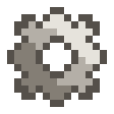

Сборочный автомат
alaindustrial:assembler
Сводка
Сборочный автомат — первая MV-машина мода и конец ручному крафту по 64 стака. Он помнит верстачные рецепты (записанные на Схему сборки) и штампует их непрерывно, пока есть сырьё и заряд. Редстоун не нужен — машина работает сама.
Сырьё автомат берёт не из своего инвентаря и не из труб, а из собственного склада, собранного из Модулей хранения. Готовое кладёт в отдельную выходную зону, чтобы продукция не смешивалась с сырьём.
В отличие от ванильного «Крафтера», который заново решает сетку на каждый редстоун-импульс и ничего не запоминает, автомат хранит очередь из трёх схем и переключается между ними сам.
Энергия
| Поле | Значение |
|---|---|
| Роль | потребитель |
| Буфер (EU/FE) | 12000 |
| Макс. вход (EU/FE/такт) | 128 (MV) |
| Макс. выход (EU/FE/такт) | н/п |
| EU/FE/такт | 12 |
Питается от существующих генераторов через золотой кабель (MV-транспорт, 48 EU/FE/т) — отдельный MV-генератор или трансформатор для запуска не требуется. Медный LV-кабель (12 EU/FE/т) тоже справится ровно впритык: машине нужно как раз 12 EU/FE/т.
Энергия расходуется только во время рабочего тика. Простой по любой причине — нет схемы, нет ингредиентов, нет места в выходной зоне — EU/FE не тратит вообще.
Процессинг
| Поле | Значение |
|---|---|
| Что умеет собирать | любой рецепт верстака — с формой и без |
| Длительность (тики) | 40 |
| Цена операции (EU/FE) | 480 |
| Авто-выгрузка | нет |
Собственного типа рецептов у автомата нет. Он решает обычные верстачные рецепты через штатный обычные верстачные рецепты, а значит автоматически поддерживает ванильные, рецепты самого мода (они объявлены обычным minecraft:crafting_shaped), рецепты любого стороннего мода и датапаков. Теги работают бесплатно: #minecraft:planks в рецепте означает «любые доски» — ровно как в верстаке.
Рецепты машин мода (дробление, плавка, экстракция) автомат не выполняет — это отдельные типы рецептов и отдельные машины.
Выбор схемы из очереди
Схемы опрашиваются по кругу (round-robin), позиция курсора сохраняется между циклами. Схема пропускается, если выполняется хотя бы одно:
на складе не хватает ингредиентов; в выходной зоне нет места под результат; рецепт схемы не существует (например, исчез после смены датапака).
Если ни одна схема не готова — машина уходит в сон и просыпается при изменении склада или заряда.
Круговой обход выбран намеренно вместо приоритета «сверху вниз»: при строгом приоритете первая схема с бесконечным сырьём никогда не отдала бы очередь остальным.
Порядок одной операции
Порядок жёсткий, отступление ломает либо результат, либо возврат остатков:
- Собрать вход из сетки схемы и проверить наличие каждого ингредиента на складе.
- Проверить, что результат влезает в выходную зону, а остатки — на склад. Если нет — операцию
не начинать вовсе (это то, что защищает от потери предметов).
- Списать EU/FE и тикать прогресс.
- На финише: получить результат рецепта, затем остатки, и только потом израсходовать ингредиенты.
Шаги 1–2 выполняются на копиях склада и выходной зоны: операция либо просчитана целиком, либо не начата вовсе, а запись в мир — это ровно те массивы, на которых проверяли вместимость. Проверка и действие — один и тот же код, поэтому «проверили, что влезет» и «положили» не могут разойтись.
Просчёт происходит дважды за операцию — на старте (решить, начинать ли) и на финише (склад мог измениться за 40 тиков), но не на сорока промежуточных тиках. Если на финише плана больше нет (склад опустел, рецепт исчез), машина замирает на финишной черте: прогресс и уже потраченные EU/FE сохраняются, и операция завершается сразу, как только план снова сходится.
Подстановка ингредиентов
По умолчанию автомат берёт со склада ровно те предметы, что записаны в схеме, сравнивая по предмету и игнорируя компоненты (так же, как это делает штатный Ingredient). Изношенный инструмент поэтому годится там, где в схему положили новый.
Тумблер подстановки (квадратная кнопка со стрелками справа от «Записать») переключает это для той схемы, чью раскладку показывает окно — то есть для схемы, обведённой в очереди. Настройка живёт на самом предмете-схеме: переставили схему в другой автомат — она подставляет там тоже.
Когда подстановка включена, порядок такой:
- Сначала — предмет, который положил игрок. Пока он есть на складе, берётся он и только он.
Refined Storage этого не делает, и это постоянная претензия игроков.
- Если его нет — кандидаты из
Ingredientтого самого слота рецепта, в порядке самого рецепта.
Не «из тега вообще»: для рецепта, написанного через #minecraft:planks (палки, верстак, миска), кандидатов двенадцать; для oak_stairs, где ингредиент — литерально minecraft:oak_planks, кандидатов нет вообще, и подстановка не сработает. Ситуация «в схеме любые доски, на складе дуб и берёза, непонятно какая лестница получится» невозможна в принципе: ванильные рецепты семейств пер-породные.
- Замена принимается, только если пересборка даёт тот же результат — рецепт по-прежнему
сходится, и собранный стек совпадает с тем, что схема обещает в тултипе (с компонентами и количеством). Не сошлось — операция не начинается вовсе, EU/FE не тратится, склад не трогается.
Позиционность берётся из Recipe.placementInfoslotsToIngredientIndex — список, параллельный слотам рецепта, где значение — индекс в ingredients (или −1 для пустой ячейки). Для ShapedRecipe слоты — это ячейки паттерна, поэтому индекс переводится в ячейку сетки 3×3 через те же обрезку и, при зеркальном совпадении, отражение, что и возврат остатков. Для всего, что не ShapedRecipe (в первую очередь shapeless), позиций нет по определению — тогда кандидатами каждой занятой ячейки становятся все ингредиенты рецепта, а отсекает лишнее пункт 3.
Почему по умолчанию выключено. Штатный Ingredient сравнивает только предмет и игнорирует компоненты, поэтому при включённой подстановке в ячейку может уйти зачарованная книга вместо чистой или изношенный инструмент вместо нового. Тултип кнопки об этом предупреждает, а сама схема с включённой подстановкой подписана отдельной строкой.
Материалы из чужих модов (медь, олово, серебро) работают ровно настолько, насколько ингредиенты рецептов записаны общими тегами c: — это отдельная работа, не свойство автомата.
Остаточные предметы
Рецепты с контейнерами (ведро в торте, бутылка) возвращают предмет обратно. Остаток кладётся в ту самую ячейку склада, из которой был взят его ингредиент; если она занята — в любую свободную ячейку склада; если склад полон — в выходную зону; если полна и она — операция не начиналась (шаг 2).
Возврат «в родную ячейку» выбран не ради красоты: именно он заставляет кузнечный молот оставаться на месте и просто терять единицу прочности, а не переползать по складу на одну ячейку за каждый крафт. Технически это и есть то место, ради которого приходится разворачивать обрезку координат CraftingInput — список остатков приходит в координатах обрезанной сетки, и без обратного пересчёта «родная ячейка» была бы вычислена неверно.
Стек-зависимые остатки (молот мода, теряющий единицу прочности вместо исчезновения) работают автоматически, потому что остатки берутся через рецепт, а не напрямую из предмета.
Инвентарь
| Слот | Принимает | Кол-во |
|---|---|---|
| Схемы | Схема сборки с записанным рецептом | 3 |
| Выходная зона | только выдача (автомат кладёт, игрок забирает) | 6 |
| Бланк схемы | чистая схема сборки — то, на что пишет «Записать» | 1 |
| Апгрейды | модули-апгрейды | 4 (рабочий — первый) |
| Склад | любые предметы | 27 + 27 за каждый модуль, потолок 108 |
Сетка задания рецепта не является инвентарём: это девять «призрачных» ячеек, предметы в них не расходуются и не хранятся — они только показывают, что записать в схему.
Выходная зона на 6 слотов выбрана осознанно: однослотовый выход — известная причина клина машины, когда результат забил единственную ячейку и производство встало.
Автоматизация снаружи: предметная труба наполняет склад и забирает из выходной зоны. Подавать ингредиенты трубой напрямую в машину не нужно и не предусмотрено.
Интерфейс
Окно машины (открывается правым кликом по автомату) состоит из двух вкладок: «Работа» и «Запись». Это один блок и одно окно — переключается только то, что показано.
Раньше окно делало две несвязанные работы одновременно: рядом стояли сетка 3×3, в которой рецепт сочиняют, и живое состояние производства. По такому окну не понять, что записано, что делается прямо сейчас и какая из сеток какая. Запись и производство — разные занятия, и теперь у каждого своя вкладка; общего места на экране у них нет вовсе.
Переключение вкладки — это смена вида, а не режима. Машина продолжает крафтить, пока игрок сидит на вкладке записи: вкладка не трогает ни очередь, ни прогресс, ни энергию. Режим, который останавливал бы производство на время записи, сознательно не сделан — он превратил бы «хочу записать ещё один рецепт» в остановку линии.
Вкладка «Работа»
три слота схем — очередь, с рамкой на активной; раскладка активной схемы 3×3 и её продукт — только просмотр (см. ниже); выходная зона на 6 слотов; полоса энергии и полоса прогресса; строка статуса: работает / нет схемы / не хватает сырья / выход заполнен / нет энергии / рецепт не найден. Игрок должен различать причины простоя — иначе «машина стоит» неотличимо от «машина сломалась».
Вкладка «Запись»
Чем занимаются, когда сочиняют рецепт:
сетка 3×3 из призрачных ячеек; предпросмотр результата — что эта раскладка делает; слот чистого бланка; кнопка «Записать» — превращает бланк в записанную схему; квадратная кнопка со стрелками слева от «Записать» — тумблер подстановки для показанной схемы: серые стрелки — выключено, зелёные — включено.
Ячейки сетки заполняются кликом: наведи на ячейку и щёлкни, держа предмет на курсоре, — в ячейку ляжет одна его копия; щелчок пустым курсором ячейку очищает. Предметы при этом не расходуются: сетка показывает раскладку, а не хранит её.
Бланк лежит здесь, а не в очереди схем, и это следствие того же решения: вкладка записи должна быть самодостаточной. Если бы «Записать» брала бланк из очереди, игроку пришлось бы сходить на вкладку «Работа», чтобы записать рецепт, — и две работы снова оказались бы связаны. Записанная схема появляется на месте бланка; оттуда её забирают и кладут в очередь на вкладке «Работа». Записывать — не то же самое, что ставить в очередь, и порядок действий это говорит вслух.
Слоты скрытой вкладки недоступны
Слот, принадлежащий невидимой сейчас вкладке, нельзя ни заполнить, ни опустошить — ни кликом, ни шифт-кликом, ни перетаскиванием, ни двойным кликом «собрать всё». Скрытая вкладка не просто не нарисована: пока она скрыта, её слотов для игры не существует.
Вкладка — состояние окна, а не машины: она нигде не сохраняется, и два игрока у одного автомата могут смотреть разные вкладки, не мешая друг другу.
Показ активной схемы
Вкладка «Работа» показывает раскладку схемы из очереди — той, по которой машина работает, а если она простаивает, то первой записанной. Без этого работающая машина выглядела так: статус «Собирает», выход наполняется, а окно пустое — «непонятно, что за рецепт записан». Продукт схемы нарисован под выходной зоной, которую он и наполняет.
Показанная раскладка помечена как чужая и нередактируемая: приглушённые предметы, и тултип по ячейке добавляет строку «Раскладка схемы N — только просмотр». Бледно-голубая рамка стоит вокруг слота схемы, из которой раскладка взята, — видно, какая именно из трёх показана.
Спутать показанное с собственной раскладкой нельзя: показанная схема только рисуется поверх рисунка вкладки, и никаких слотов в этом месте нет вообще — взять оттуда нечего ни при каком клиенте. Собственная раскладка игрока живёт на другой вкладке и на эту не влияет: пока он раскладывает свой рецепт, вкладка «Работа» продолжает показывать то, что делает машина. (До появления вкладок было наоборот — раскладка игрока перебивала показ, и машинная пропадала у него из-под рук.)
Рамки в очереди различаются по смыслу: оранжевая — схема, по которой идёт текущая операция, бледно-голубая — схема, чья раскладка показана. Обычно это одна и та же схема, и оранжевая перекрывает голубую.
Кроме того, у каждой записанной схемы её продукт нарисован прямо в иконке предмета — см. Схему сборки. Три схемы в очереди различимы без наведения, и точно так же они различимы в сундуке или в инвентаре.
Окно склада — это окно модуля хранения, оно открывается правым кликом по самому модулю, а не кнопкой в автомате:
сетка общего склада, 3–12 рядов по числу подключённых модулей; прокрутки, скроллбара и поиска нет — потолок в 108 слотов выбран так, чтобы всё влезало на экран.
Окно склада — то же самое, что открывает модуль хранения.
Если склада рядом нет вовсе, автомат ведёт себя ровно как при пустом складе: строка статуса говорит «не хватает материалов», EU/FE не тратится, ничего не ломается.
Свойства блока
| Поле | Значение |
|---|---|
| Форма | полный куб 16³ |
| Прочность | 3.0 |
| Взрывоустойчивость | 6.0 |
| Инструмент | кирка |
| Дроп с NBT энергии | нет |
При разрушении автомата выпадают схемы из слотов и содержимое выходной зоны. Содержимое склада остаётся в модулях — теряется только связность, и модули простаивают до установки нового автомата. Закреплено TC-ASM-026: выпавшее считается точным числом, поэтому видна и потеря схемы (её не скрафтить обратно), и двойной дроп выходной зоны.
Очередь схем, прогресс и позиция круга (курсора) переживают перезагрузку — TC-ASM-027 гоняет машину через NBT, тот же путь, что сохранение и загрузка чанка. Курсор в этом списке — единственное поле без видимого симптома: потеряйся он, круг молча начинал бы заново с первой схемы, и честность очереди, ради которой он и существует, тихо перестала бы работать.
Передняя грань помечена и, как у прочих машин мода, исключена из автоматизации: труба, приткнутая к лицевой стороне, не увидит слотов.
Рецепты
Рецептов переработки нет — машина использует ванильный minecraft:crafting
Состав по образцу жанра — корпус тира + две схемы + «идентичность» + «хранение», а четыре угла заняты механикой, которая эти детали двигает:
В центре — продвинутый корпус машины: сердце и тир машины. Над ним верстак — то, что машина, собственно, делает; под ним модуль хранения — откуда она берёт детали. Слева и справа от корпуса — две электронные схемы, логика, читающая схему сборки. Все четыре угла — железные шестерни, «руки», подающие деталь в сетку.
Углы — именно шестерни, а не ещё пластины: автомат — первая машина мода, которая сама перекладывает детали, и шестерня — та деталь, которую мод уже тратит ровно на это (Бак, Предметная труба читаются так же). Заполненные девять клеток заодно ставят крафт в один ряд с прочими машинами мода, где пустой угол — исключение.
Прогрессия
Тир: MV — первая MV-машина мода, якорь MV-фазы Требует: Модуль хранения (без склада машине неоткуда брать сырьё) и Схему сборки С требует ещё и пройденную нефтяную линию — не напрямую, а через продвинутый корпус: в нём теперь стоят 2 продвинутые схемы, а каждая из них — 4 резины. Сетка крафта самого автомата не изменилась, но его полная стоимость выросла на эти 2 схемы, и собрать автомат до постройки Полимеризатора и Вулканизатора больше нельзя Развивается в: нет. Автокрафт «по требованию» (заказ «сделай 64 X» с деревом подкрафтов) — отдельная будущая система, а не апгрейд этой машины
Связанное
Модуль хранения — склад, из которого автомат берёт сырьё Схема сборки — предмет, хранящий рецепт Золотой кабель — питание MV-машины Предметная труба — наполняет склад, забирает выход Лесопилка — образец машины с переключаемыми режимами в GUI
Крафт
Крафт на верстаке
▶
Сборочный автомат